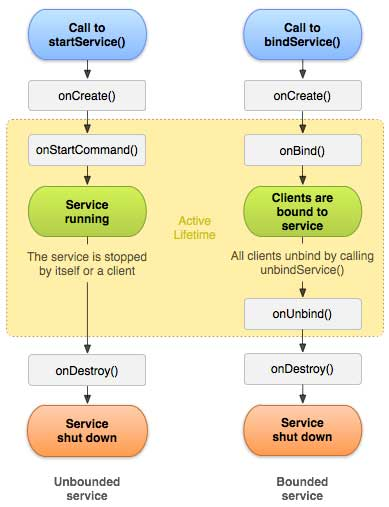
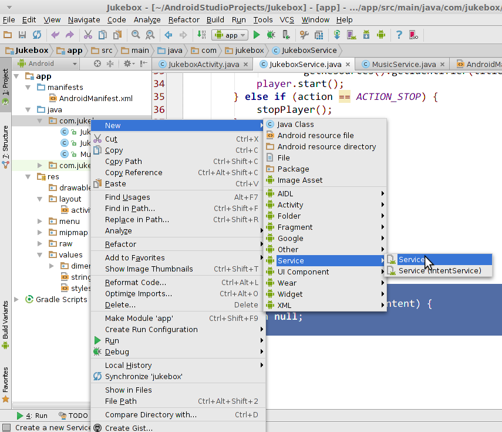
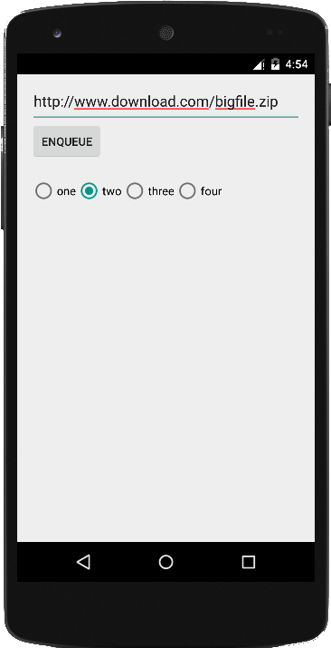
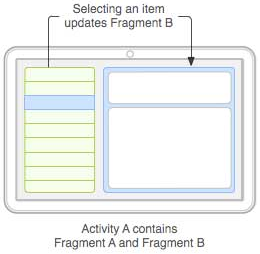
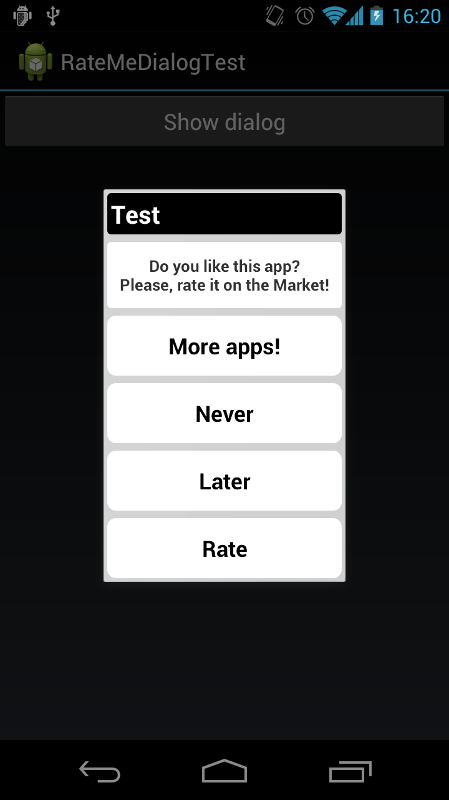
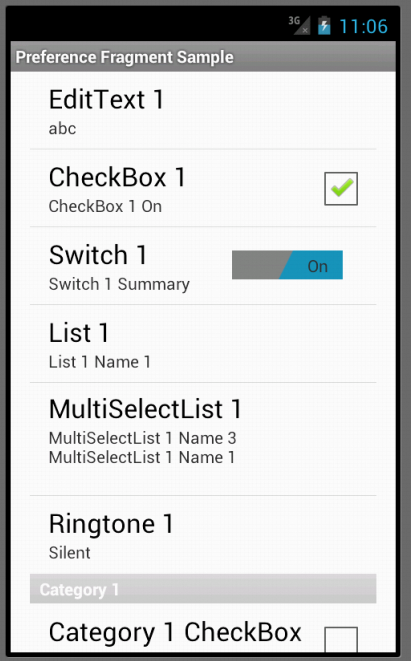
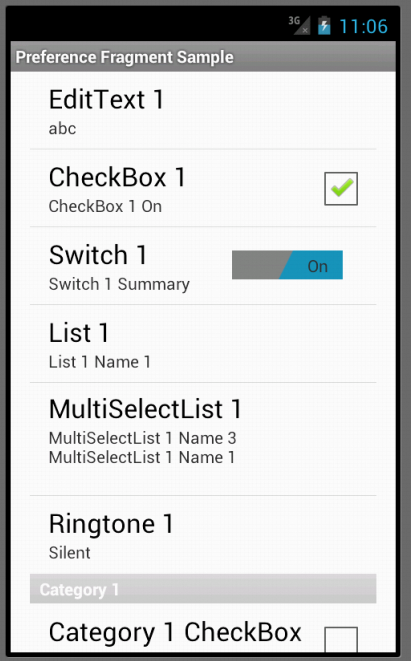
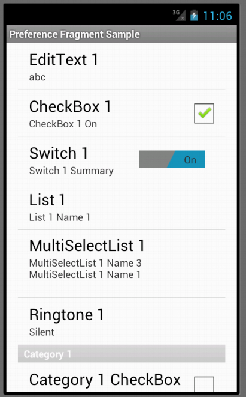

Services
- A Service is an application component that can perform long-running operations in the background. It does not provide a user interface
- Example: Google Play Music plays the music using a service.
- Example: Web browser runs a downloader service to retrieve a file.
- Services are useful for long-running tasks, and/or providing functionality that can be used by other applications.
Types of Services
- There three types of services
- Started Service
- Foreground Service
- Foreground service performs some operation that is noticeable to the user
- For example, an audio app would use a foreground service to play an audio track
- Foreground services must display a Notification
- Background Service
- Background service performs an operation that isn't directly noticed by the user
- For example, if an app used a service to compact its storage, that would usually be a background service.
- Foreground Service
- Bound Service
- A service is bound when an application component binds to it by calling bindService().
- A bound service offers a client-server interface that allows components to interact with the service, send requests, receive results, and even do so across processes with interprocess communication (IPC).
- A bound service runs only as long as another application component is bound to it.
- Started Service
Service Lifecycle

- A service is started by an app's activity using an intent
- Service operation modes:
- start: The service keeps running until it is manually stopped.
- we'll use this one
- bind: The service keeps running until no "bound" apps are left.
- Services have similar methods to activities for lifecycle events.
onCreate, onDestroy
- start: The service keeps running until it is manually stopped.
Adding Service in Android Studio
- Right-click your project's Java package
- click New → Service → Service

Service Class Template
public class ServiceClassName extends Service {
/* this method handles a single incoming request */
@Override
public int onStartCommand(Intent intent, int flags, int id) {
// unpack any parameters that were passed to us
String value1 = intent.getStringExtra("key1");
String value2 = intent.getStringExtra("key2");
// do the work that the service needs to do ...
return START_STICKY; // stay running
}
@Override
public IBinder onBind(Intent intent) {
return null; // disable binding
}
}
AndroidManifest.xml Changes
- To allow your app to use the service, add the following to your app's AndroidManifest.xml configuration:
- (Android Studio does this for you if you use the New Service option)
- the exported attribute signifies whether other apps are also allowed to use the service (true=yes, false=no)
- note that you must write a dot ( . ) before the class name below!
- A Service runs on the main thread of the calling Component's process by default.
<application ...>
<service
android:name=".ServiceClassName"
android:enabled="true"
android:process = "name of separate process"
android:exported="false" />
Starting a service
- In your Activity class:
Intent intent = new Intent(this, ServiceClassName.class);
intent.putExtra("key1", "value1");
intent.putExtra("key2", "value2");
startService(intent); // not startActivity!
- or if the same code is launched from a fragment:
Intent intent = new Intent(getActivity(),ServiceClassName.class);Intent Actions
- Often a service has several "actions" or commands it can perform.
- Example: A music player service can play, stop, pause, ...
- Example: A chat service can send, receive, ...
- Android implements this with set/getAction methods in Intent.
- In your Activity class:
Intent intent = new Intent(this, ServiceClassName.class); intent.setAction("action"); intent.putExtra("key1", "value1"); startService(intent); - In your Service class:
String action = intent.getAction(); if (action.equals("action")) { ... }
- In your Activity class:
BroadCasting the results
- When a service has completed a task, it can notify the app by "sending a broadcast" which the app can listen for:
- As before, set an action in the intent to distinguish different kinds of results.
public class ServiceClassName extends Service { @Override public int onStartCommand(Intent tent, int flags, int id) { // do the work that the service needs to do ... ... // broadcast that the work is done Intent done = new Intent(); done.setAction("action"); done.putExtra("key1", value1); ... sendBroadcast(done); return START_STICKY; // stay running }
- As before, set an action in the intent to distinguish different kinds of results.
Receiving a broadcast
- Your activity can hear broadcasts using a BroadcastReceiver
- Extend BroadcastReceiver with the code to handle the message.
- Any extra parameters in the message come from the service's intent.
public class ActivityClassName extends Activity {
...
private class ReceiverClassName extends BroadcastReceiver {
@Override
public void onReceive(Context context, Intent intent) {
// handle the received broadcast message
...
}
}
}
Listening for broadcasts
- Set up your activity to be notified when certain broadcast actions occur.
- You must pass an intent filter specifying the action(s) of interest.
public class ActivityClassName extends Activity {
@Override
protected void onCreate(Bundle savedInstanceState) {
...
IntentFilter filter = new IntentFilter();
filter.addAction("action");
registerReceiver(new ReceiverClassName(), filter);
}
}
Services and threading
- By default, a service lives in the same process and thread as the app that created it.
- This is not ideal for long-running tasks.
- If the service is busy, the app's UI will freeze up.

- Example: If the Downloader app at right tries to download a large/slow file, the radio buttons and other UI elements will not respond during the download.
- To make the service and app more independent and responsive, the service should handle tasks in threads.
Fragment life cycle

Fragment template
public class Name extends Fragment {
@Override
public View onCreateView(LayoutInflater inflater,
ViewGroup vg, Bundle bundle) {
// load the GUI layout from the XML
return inflater.inflate(R.layout.id, vg, false);
}
public void onActivityCreated(Bundle savedState) {
super.onActivityCreated(savedState);
// ... any other GUI initialization needed
}
// any other code (e.g. event-handling)
}
Fragment vs. Activity
- Many activity methods aren't present in the fragment.
- But call
getActivityto access the activity the fragment is in.Button b = (Button) findViewById(R.id.but);Button b = (Button) getActivity().findViewById(R.id.but); - Sometimes also use
getViewto refer to the activity's layout
- But call
- Event handlers cannot be attached in the XML any more. :-(
- Must be attached in Java code instead.
- Passing information to a fragment (via Intents/Bundles) is trickier.
- The fragment must ask its enclosing activity for the information.
- Fragment initialization code is different.
- Typically move
onCreatecode toonActivityCreated.
- Typically move
Fragment onClick listener
- Activity:
<Button android:id="@+id/b1"android:onClick="onClickB1" ... /> - Fragment:
<!-- in fragment's XML layout file --> <Button android:id="@+id/b1" ... />// in fragment's Java file Button b = (Button) getActivity().findViewById(r.id.b1); b.setOnClickListener(new View.OnClickListener() { @Override public void onClick(View view) { // whatever code would have been in onClickB1 } });
Activity with parameters
public class Name extends Activity {
@Override
protected void onCreate(Bundle savedInstanceState) {
super.onCreate(savedInstanceState);
setContentView(R.layout.name);
// extract parameters passed to activity from intent
Intent intent = getIntent();
int name1 = intent.getIntExtra("id1", default);
String name2 = intent.getStringExtra("id2", "default");
// use parameters to set up the initial state
...
}
}
Fragment with parameters
public class Name extends Fragment {
@Override
protected void onActivityCreated(Bundle savedState) {
super.onActivityCreated(savedState);
// extract parameters passed to activity from intent
Intent intent = getActivity().getIntent();
int name1 = intent.getIntExtra("id1", default);
String name2 = intent.getStringExtra("id2", "default");
// use parameters to set up the initial state
...
}
}
Fragment communication

- An activity can contain multiple fragments.
- The fragments can talk to each other.
- use activity's
getFragmentManagermethod - its
findFragmentByIdmethod can access any fragment that has an id - write regular methods to communicate
- use activity's
Activity act = getActivity();
if (act.getResources().getConfiguration().orientation ==
Configuration.ORIENTATION_LANDSCAPE) {
// update other fragment within this same activity
FragmentClass fragment = (FragmentClass)
act.getFragmentManager().findFragmentById(R.id.id);
fragment.methodName(parameters);
}
Re-using layout with include
<include layout="@layout/name" />
- To use a layout in multiple places without a fragment, use the
includetag in your XML. - Similar to a fragment, but without its own lifecycle and event handling behavior.
- Example (uses a hypothetical layout in content1.xml):
<!-- activity_example1.xml -->
<LinearLayout ...>
...
<include layout="@layout/content1" />
<!-- activity_example2.xml -->
<RelativeLayout ...>
...
<include layout="@layout/content1" />
Dynamically add a fragment
- You can add or remove a fragment from the screen dynamically in your activity's Java code:
getFragmentManager().beginTransaction() .add(R.id.containerID, fragment) .commit(); - Example:
// in my activity class somewhere MyFragment frag = new MyFragment(); getFragmentManager().beginTransaction() .add(R.id.mycontainer, frag) .commit(); - related methods in fragment manager:
remove,replace
Fragment subclasses
DialogFragment- Pops up on top of the current activity.ListFragment- Shows list of items as its main content.PreferenceFragment- Allows user to change app settings.

 


Lib: SimpleActivity
- Accessing fragments from a
SimpleActivity:Fragment myFrag = findFragmentById(R.id.theId);
| Method | Description |
|---|---|
findFragment(id) findFragmentById(id) |
return fragment with the given ID |
addFragment(containerID, |
add a new fragment into the given view as its container |
removeFragment(fragment); |
remove an existing fragment |
replaceFragment(containerID, |
replace a fragment with a new one |
hideFragment(fragment); |
make a fragment invisible |
showFragment(fragment); |
make a fragment visible |
Lib: SimpleFragment
- If your app uses fragments, you can also have your fragments extend
SimpleFragment:public class MyFragment extends Fragment {public class MyFragment extends SimpleFragment { - Not a lot of functionality yet, but currently lets you access the
SimpleActivitycontaining the fragment.SimpleActivity act = getSimpleActivity(); ...